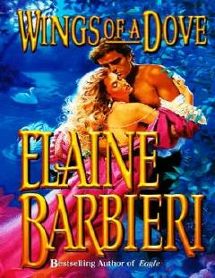

WOXIX asr Amerikasida yetim bolalarning taqdiri va ularning ulg'ayish yo'lidagi muhabbati hikoya qilinadi.
Ushbu asar XIX asr oxirlarida Nyu-York ko'chalaridan G'arbiy qismdagi fermalarga yetaklovchi hayotiy yo'lga chiqqan yetim bolalar taqdiri haqida hikoya qiladi. Bosh qahramonlar Alli Pirs va Dileyni Marshning bolalikdan boshlangan munosabatlari yillar davomida muhabbat va sinovlarga boy yo'lni bosib o'tadi. Asar insoniy rishtalar, mehr-oqibat va hayotiy qiyinchiliklarni yengib o'tish mavzularini ochib beradi.